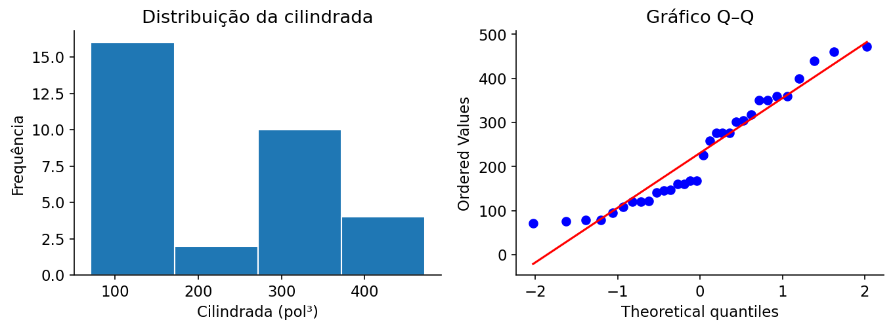

Shapiro–Wilk
Verifica se os dados apresentam desvios significativos da distribuição normal.
01 · O que é?
Verifica se os dados apresentam desvios significativos da distribuição normal.
02 · Pressupostos e como verificá-los
- Dados quantitativos.
- Observações independentes.
- Amostra sem replicações artificiais.
- Verifique o desenho amostral e um gráfico Q–Q.
- A normalidade relevante em regressão/ANOVA costuma ser a dos erros, não a dos preditores.
Confira o delineamento da pesquisa e os gráficos exploratórios. A validade inferencial depende dos pressupostos do modelo, não apenas do resultado de um teste diagnóstico.
03 · Hipóteses e estatística de teste
Hipóteses
Estatística, estimador ou critério de ajuste
Em que:
- \(W\)
- estatística do teste de Shapiro–Wilk
- \(n\)
- número de observações independentes
- \(X_{(i)}\)
- i-ésima observação em ordem crescente
- \(X_i\)
- i-ésima observação original
- \(\bar X\)
- média amostral
- \(a_i\)
- coeficiente tabulado/computado para cada posição ordenada a partir dos momentos e da matriz de covariâncias de estatísticas de ordem de uma amostra normal de tamanho n; calculado internamente por shapiro.test()
Estatística W de Shapiro–Wilk, obtida dos quadrados das combinações ordenadas das observações, com distribuição nula calibrada numericamente.
Os valores amostrais são obtidos diretamente dos dados; os estimadores, pesos ou coeficientes específicos são calculados pelas funções do R indicadas no exemplo. Não substitua parâmetros desconhecidos por valores arbitrários.
04 · Como interpretar os resultados?
\(p<0{,}05\) : rejeite normalidade; \(p\geq0{,}05\) : não rejeite, sem concluir que os dados são normais. Não há IC usual para W.
Interprete a decisão em conjunto com o gráfico Q–Q e o tamanho da amostra. A não rejeição não demonstra normalidade; a rejeição não mede, por si só, a relevância prática do desvio.
05 · Como executar no R?
Examine os dados, execute a análise e compare os resultados com os valores e gráficos apresentados a seguir.
Copie o código para o RStudio ou baixe o arquivo .R para executar o exemplo completo.
06 · Exemplo de aplicação
Contexto dos dados
O conjunto mtcars reúne características de 32 modelos de automóveis. A variável disp representa a cilindrada do motor, em polegadas cúbicas.
Objetivo da análise
Investigar se é razoável representar a distribuição da cilindrada por uma normal. Um histograma e um gráfico Q–Q ajudam a avaliar assimetria e observações extremas.
# Shapiro–Wilk ----
# Ajuste e resultados ----
x <- mtcars$disp
qqnorm(x); qqline(x, col = "red")
summary(x)
sd(x)
resultado <- shapiro.test(x)
print(resultado)
cat(ifelse(resultado$p.value < 0.05, "Evidência contra normalidade", "Sem evidência suficiente contra normalidade"), "\n")
# Visualização e diagnóstico ----
hist(x, breaks = "FD", col = "gray85", border = "white", main = "Distribuição da cilindrada", xlab = "Cilindrada (pol³)")
qqnorm(x, pch = 19, main = "Gráfico Q-Q da cilindrada")
qqline(x, col = "red", lwd = 2)
Saída numérica para conferência
Valores recalculados independentemente com os mesmos dados; a formatação da saída pode diferir da apresentada pelo R.
Shapiro-Wilk normality test W = 0.92001, p-value = 0.02081
Gráfico dos dados

Como p = 0.0208 < 0,05, rejeita-se a hipótese de normalidade da cilindrada.
Resultados e interpretação
Resultado para estes dados: W ≈ 0,9200 e valor-p ≈ 0,0208. Ao nível de 5%, rejeita-se a hipótese de normalidade da cilindrada. O gráfico Q–Q permite identificar em que regiões ocorrem os desvios.
O código apresenta uma sugestão de aplicação; a análise deve ser adaptada aos dados e ao objetivo do estudo.

Prof. Dr. Cássius Henrique Xavier Oliveira
Professor · ICTIN/UFLA · Estatística, Confiabilidade e Ciência de Dados.
Conheça minha trajetória e projetos →